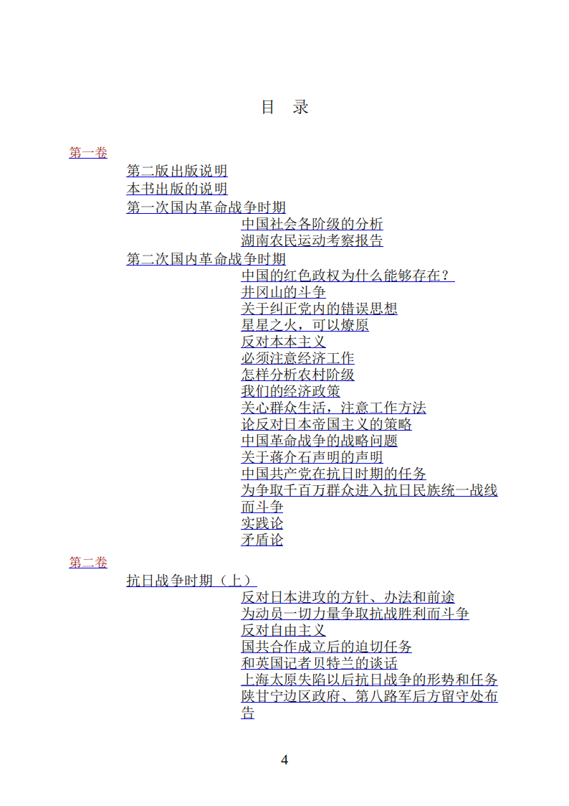
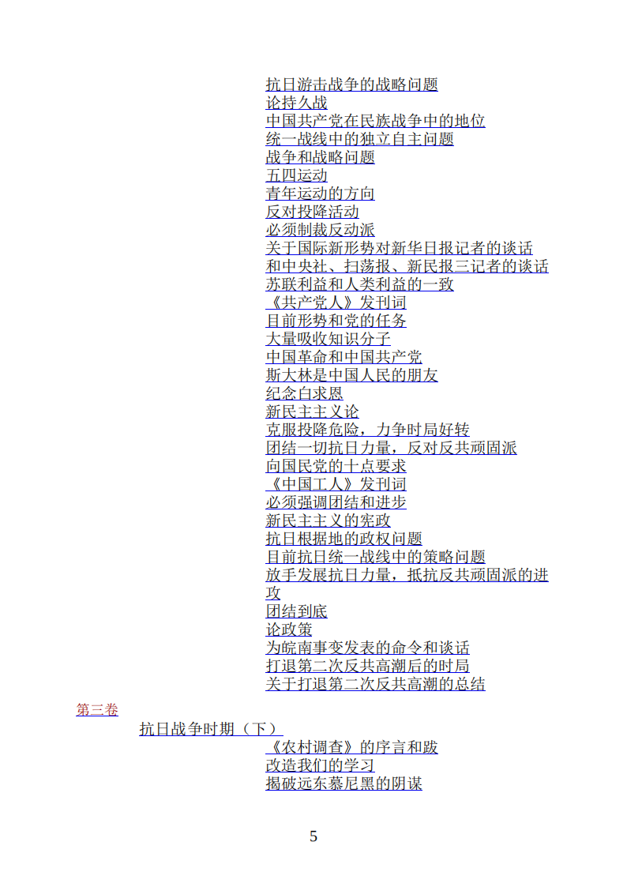
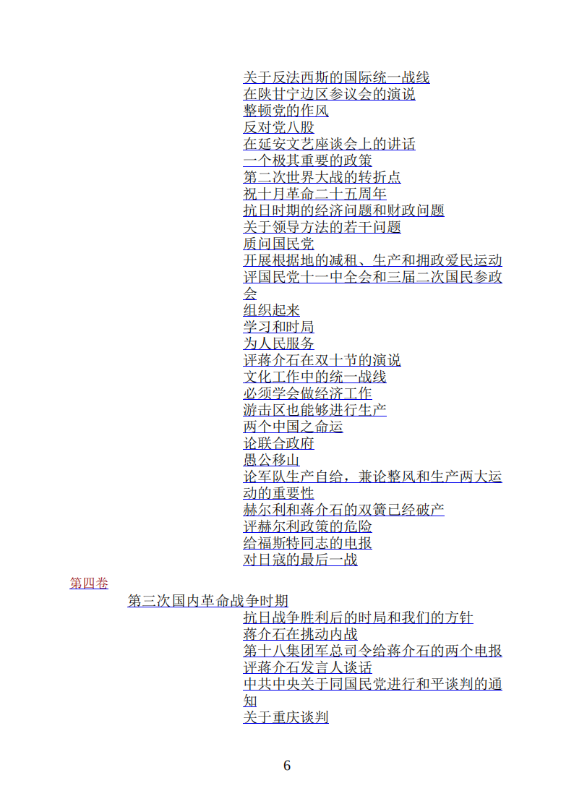
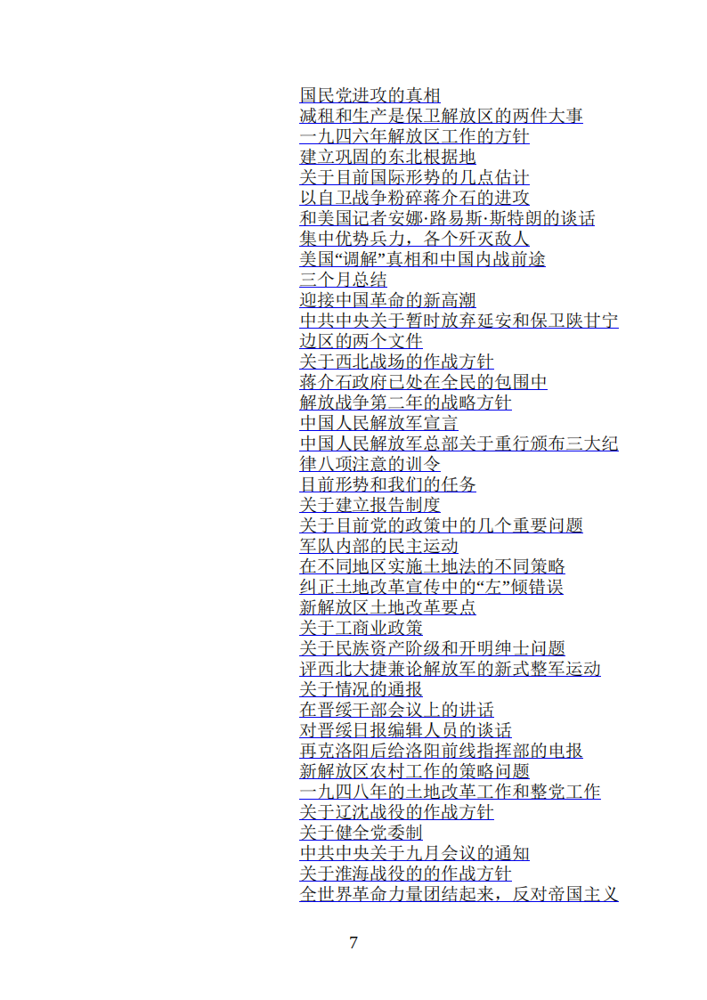
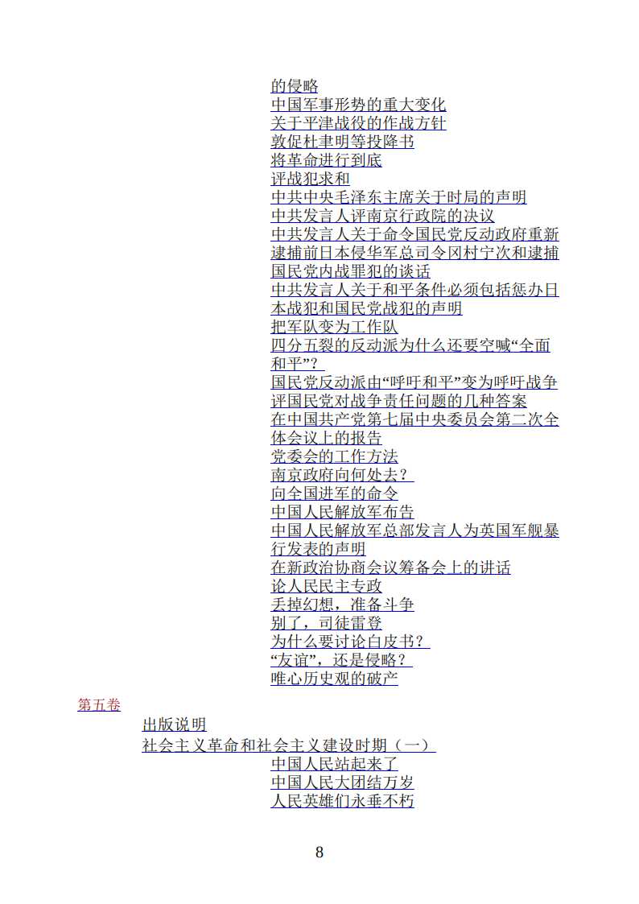

第一二卷


第三卷(往上翻一点)

第四卷(往上翻一点)


二、十篇经典作品
1.反对党八股
2.湖南农民运动考察报告
3.关于纠正党内的错误思想
4.星星之火，可以燎原
5.反对本本主义
6.关心群众生活，注意工作方法
7.论反对日本帝国主义的策略
8.中国革命战争的战略问题
9.论持久战
10.论联合政府
《反对党八股》:
那时的统治阶级都拿孔夫子的道理教学生，把孔夫子的一套当作宗教教条一样强迫人民信奉，做文章的人都用文言文。总之，那时统治阶级及其帮闲者们的文章和教育，不论它的内容和形式，都是八股式的，教条式的。这就是老八股、老教条。揭穿这种老八股、老教条的丑态给人民看，号召人民起来反对老八股、老教条，这就是五四运动时期的一个极大的功绩。
但到后来就产生了洋八股、洋教条。我们党内的一些违反了马克思主义的人则发展这种洋八股、洋教条，成为主观主义、宗派主义和党八股的东西。这些就都是新八股、新教条。
中国是一个小资产阶级成分极其广大的国家，我们党是处在这个广大阶级的包围中，我们又有很大数量的党员是出身于这个阶级的，他们都不免或长或短地拖着一条小资产阶级的尾巴进党来。小资产阶级革命分子的狂热性和片面性，如果不加以节制，不加以改造，就很容易产生主观主义、宗派主义，它的一种表现形式就是洋八股，或党八股。
党八股的第一条罪状是：空话连篇，言之无物。
党八股的第二条罪状是：装腔作势，借以吓人
党八股的第......
写文章，做演说，著书，写报告，第一是大壹贰叁肆，第二是小一二三四，第三是甲乙丙丁，第四是子丑寅卯，还有大ABCD，小abcd，还有阿拉伯数字，多得很！一篇文章充满了这些符号，不提出问题，不分析问题，不解决问题，不表示赞成什么，反对什么，说来说去还是一个中药铺，没有什么真切的内容。
《湖南农民运动考察报告》:
很短的时间内，将有几万万农民从中国中部、南部和北部各省起来，其势如暴风骤雨，迅猛异常，无论什么大的力量都将压抑不住
站在他们的前头领导他们呢？还是站在他们的后头指手画脚地批评他们呢？还是站在他们的对面反对他们呢？每个中国人对于这三项都有选择的自由，不过时局将强迫你迅速地选择罢了。
农民在乡里造反，搅动了绅士们的酣梦。乡里消息传到城里来，城里的绅士立刻大哗。我初到长沙时，会到各方面的人，听到许多的街谈巷议。从中层以上社会至国民党右派，无不一言以蔽之曰：“糟得很。”
孙中山先生致力国民革命凡四十年，所要做而没有做到的事，农民在几个月内做到了。这是四十年乃至几千年未曾成就过的奇勋。这是好得很。完全没有什么“糟”，完全不是什么“糟得很”。
革命不是请客吃饭，不是做文章，不是绘画绣花，不能那样雅致，那样从容不迫，文质彬彬，那样温良恭俭让。革命是暴动，是一个阶级推翻一个阶级的暴烈的行动。农村革命是农民阶级推翻封建地主阶级的权力的革命。农民若不用极大的力量，决不能推翻几千年根深蒂固的地主权力。
《关于纠正党内的错误思想》:
单纯军事观点在红军一部分同志中非常发展。其表现如：
（一）认为军事政治二者是对立的，不承认军事只是完成政治任务的工具之一。甚至还有说“军事好，政治自然会好，军事不好，政治也不会好”的，则更进一步认为军事领导政治了
（八）不顾主客观条件，犯着革命的急性病，不愿意艰苦地做细小严密的群众工作，只想大干，充满着幻想。这是盲动主义的残余。
单纯军事观点的来源：
（一）政治水平低。因此不认识军队中政治领导的作用，不认识红军和白军是根本不同的。
（二）雇佣军队的思想。因为历次作战俘虏兵甚多，此种分子加入红军，带来了浓厚的雇佣军队的思想，使单纯军事观点有了下层基础。
（三）因有以上两个原因，便发生第三个原因，就是过分相信军事力量，而不相信人民群众的力量。
（四）党对于军事工作没有积极的注意和讨论，也是形成一部分同志的单纯军事观点的原因。
纠正的方法：
（一）从教育上提高党内的政治水平，肃清单纯军事观点的理论根源，认清红军和白军的根本区别。同时，还要肃清机会主义和盲动主义的残余，打破四军本位主义。
（二）加紧官兵的政治训练，特别是对俘虏成分的教育要加紧。同时，尽可能由地方政权机关选派有斗争经验的工农分子，加入红军，从组织上削弱以至去掉单纯军事观点的根源。
（三）发动地方党对红军党的批评和群众政权机关对红军的批评，以影响红军的党和红军的官兵。
（四）党对于军事工作要有积极的注意和讨论。一切工作，在党的讨论和决议之后，再经过群众去执行。
（五）编制红军法规，明白地规定红军的任务，军事工作系统和政治工作系统的关系，红军和人民群众的关系，士兵会的权能及其和军事政治机关的关系。
《星星之火，可以燎原》:
犯着革命急性病的同志们不切当地看大了革命的主观力量，而看小了反革命力量。这种估量，多半是从主观主义出发。其结果，无疑地是要走上盲动主义的道路。
我们看事情必须要看它的实质，而把它的现象只看作入门的向导，一进了门就要抓住它的实质，这才是可靠的科学的分析方法。
特别是我们在红军中工作的人，一遇到败仗，或四面被围，或强敌跟追的时候，往往不自觉地把这种一时的特殊的小的环境，一般化扩大化起来，仿佛全国全世界的形势概属未可乐观，革命胜利的前途未免渺茫得很。
《反对本本主义》:
没有调查，没有发言权
你对那个问题的现实情况和历史情况既然没有调查，不知底里，对于那个问题的发言便一定是瞎说一顿。瞎说一顿之不能解决问题是大家明了的，那末，停止你的发言权有什么不公道呢？许多的同志都成天地闭着眼睛在那里瞎说，这是共产党员的耻辱，岂有共产党员而可以闭着眼睛瞎说一顿的吗？
只有蠢人，才是他一个人，或者邀集一堆人，不作调查，而只是冥思苦索地“想办法”，“打主意”。须知这是一定不能想出什么好办法，打出什么好主意的。换一句话说，他一定要产生错办法和错主意。
迈开你的两脚，到你的工作范围的各部分各地方去走走，学个孔夫子的“每事问”，任凭什么才力小也能解决问题，因为你未出门时脑子是空的，归来时脑子已经不是空的了，已经载来了解决问题的各种必要材料，问题就是这样子解决了。
《关心群众生活，注意工作方法》:
领导农民的土地斗争，分土地给农民；提高农民的劳动热情，增加农业生产；保障工人的利益；建立合作社；发展对外贸易；解决群众的穿衣问题，吃饭问题，住房问题，柴米油盐问题，疾病卫生问题，婚姻问题。总之，一切群众的实际生活问题，都是我们应当注意的问题。假如我们对这些问题注意了，解决了，满足了群众的需要，我们就真正成了群众生活的组织者，群众就会真正围绕在我们的周围，热烈地拥护我们。同志们，那时候，我们号召群众参加革命战争，能够不能够呢？能够的，完全能够的。
不注意扩大红军的领导，不讲究扩大红军的方法，尽管把扩大红军念一千遍，结果还是不能成功。
一切工作，如果仅仅提出任务而不注意实行时候的工作方法，不反对官僚主义的工作方法而采取实际的具体的工作方法，不抛弃命令主义的工作方法而采取耐心说服的工作方法，那末，什么任务也是不能实现的。
《论反对日本帝国主义的策略》:
问题摆在民族资产阶级、买办阶级和地主阶级面前，摆在国民党面前，又是怎样的呢？
大土豪、大劣绅、大军阀、大官僚、大买办们的主意早就打定了。他们过去是、现在仍然是在说：革命（不论什么革命）总比帝国主义坏。他们组成了一个卖国贼营垒，在他们面前没有什么当不当亡国奴的问题，他们已经撤去了民族的界线，他们的利益同帝国主义的利益是不可分离的，他们的总头子就是蒋介石。
我们认为在殖民地化威胁的新环境之下，民族资产阶级的这些部分的态度可能发生变化。这个变化的特点就是他们的动摇。他们一方面不喜欢帝国主义，一方面又怕革命的彻底性，他们在这二者之间动摇着。
半殖民地的政治和经济的主要特点之一，就是民族资产阶级的软弱性。正是因为这样，帝国主义敢于欺负他们，而这也就规定了他们不喜欢帝国主义的特点。自然，我们不但不否认，并且完全承认：又是因为这一点，帝国主义和地主买办阶级容易拿某种临时的贿赂为钓饵将他们拉了过去，而这也就规定了他们对于革命的不彻底性。
《中国革命战争的战略问题》:
战争——从有私有财产和有阶级以来就开始了的、用以解决阶级和阶级、民族和民族、国家和国家、政治集团和政治集团之间、在一定发展阶段上的矛盾的一种最高的斗争形式。不懂得它的情形，它的性质，它和它以外事情的关联，就不知道战争的规律，就不知道如何指导战争，就不能打胜仗。
所以，我们应该研究一般战争的规律；也应该研究革命战争的规律；最后，我们还应该研究中国革命战争的规律......苏联的规律和条令，包含着苏联内战和苏联红军的特殊性，如果我们一模一样地抄了来用，不允许任何的变更，也同样是削足适履，要打败仗。
敌强我弱，原是客观地存在的现象，可是人们不愿意想一想，一味只讲进攻，不讲防御和退却，在精神上解除了防御的武装，因而把行动引到错误的方向。许多游击队因此失败了......积极防御，又叫攻势防御，又叫决战防御。消极防御，又叫专守防御，又叫单纯防御。消极防御实际上是假防御，只有积极防御才是真防御，才是为了反攻和进攻的防御。据我所知，任何一本有价值的军事书，任何一个比较聪明的军事家，而且无论古今中外，无论战略战术，没有不反对消极防御的。
《论持久战》:
一半因为我们的宣传解释工作还不够，一半也因为客观事变的发展还没有完全暴露其固有的性质，还没有将其面貌鲜明地摆在人们之前，使人们无从看出其整个的趋势和前途，因而无从决定自己的整套的方针和做法。
抗战十个月以来，一切经验都证明下述两种观点的不对：一种是中国必亡论，一种是中国速胜论。前者产生妥协倾向，后者产生轻敌倾向。他们看问题的方法都是主观的和片面的，一句话，非科学的。
结论是什么呢？结论就是：“在什么条件下，中国能战胜并消灭日本帝国主义的实力呢？要有三个条件：第一是中国抗日统一战线的完成；第二是国际抗日统一战线的完成；第三是日本国内人民和日本殖民地人民的革命运动的兴起。
《论联合政府》:
中国的长期战争，使中国人民付出了并且还将再付出重大的牺牲；但是同时，正是这个战争，锻炼了中国人民。这个战争促进中国人民的觉悟和团结的程度，是近百年来中国人民的一切伟大的斗争没有一次比得上的。
如果说，中国近百年来一切人民斗争都遭到了失败或挫折，而这是因为缺乏国际的和国内的若干必要的条件，那末，这一次就不同了，比较以往历次，一切必要的条件都具备了。避免失败和取得胜利的可能性充分地存在着。如果我们能够团结全国人民，努力奋斗，并给以适当的指导，我们就能够胜利。
就是这样，背信弃义地向着中国共产党和中国人民来一个突然的袭击；生气蓬勃的中国大革命就被葬送了。从此以后，内战代替了团结，独裁代替了民主，黑暗的中国代替了光明的中国。但是，中国共产党和中国人民并没有被吓倒，被征服，被杀绝。他们从地下爬起来，揩干净身上的血迹，掩埋好同伴的尸首，他们又继续战斗了。